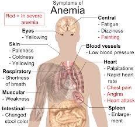

Anaemia
Definition
Anaemia is a condition you get when you don't have enough red blood cells or when those blood cells can't get enough oxygen to your body.
Anaemia is more common in women because they naturally have less iron in their bodies and because of blood loss from heavy periods.
Symptoms
- Feeling tired or not having any energy
- Feeling very weak
- Being short of breathe
- Having a very fast heartbeat when you do push yourself, like walking fast or going up stairs
- Having chest pains
- Having a hard time concentrating
What Causes Anemia?
There are more than 400 types of anemia, which are divided into three groups:
- Anemia caused by blood loss
- Anemia caused by decreased or faulty red blood cell production
- Anemia caused by destruction of red blood cells
How do you know if you're anaemic?
It's important to see your doctor if you have symptoms so you can take care of it the right way.
Your doctor or health care provider will probably give you a blood test to be sure
Pictures

Treatment
Your doctor will probably suggest that you take medication or iron supplements.